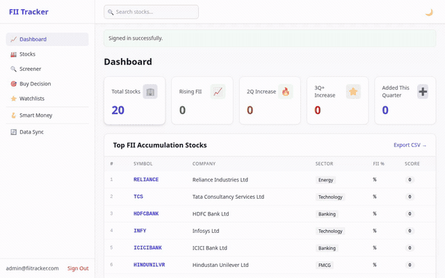

A Rails 7.2 app that tracks Foreign Institutional Investor accumulation patterns in Indian stocks, scores them against shareholding trends and fundamentals, and surfaces high-conviction candidates for research.
Why it's not deployed
The pipeline scrapes a real third-party site (Screener.in) on a schedule — fine for personal use, not something to run continuously behind a public URL. The screenshots below are the real app, seeded with 20 NSE stocks and five years of real historical shareholding and price data.
How it works
| +20 / +30 / +50 | FII holding increased 1 / 2 / 3+ consecutive quarters |
| +20 | Revenue growth > 15% YoY |
| +20 | Net profit growth > 15% YoY |
| +10 | ROCE > 20% |
| −20 | Debt/equity > 1.0 |
Screenshots
The GIF below clicks through the dashboard, the stock list, and the multi-factor screener.

Dashboard (top FII-accumulation stocks) → stock list → multi-factor screener
Engineering highlights
The dashboard's ranking query joined scores on score_date = Date.today — correct in production, but seeded/backfilled data (dated whenever it was created) fails that join silently, and COALESCE quietly falls back to 0. No error, just a dashboard that looks broken. The fix was running the actual scoring job against the real historical data, exactly what production does daily.
Daily price sync, weekly shareholding/financials sync, and daily scoring each run on their own schedule — sequenced so scoring always runs after the data it depends on has synced.
Tech stack
| Framework | Ruby on Rails 7.2 |
| Database | PostgreSQL |
| Background jobs | Sidekiq + Redis |
| Authorization | Pundit |
| Data sourcing | HTTParty + Nokogiri (Screener.in), NSE price feed |